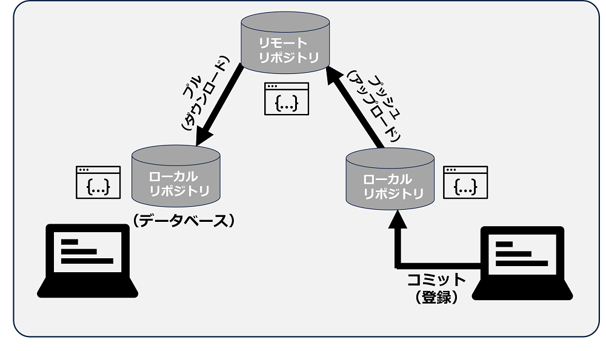
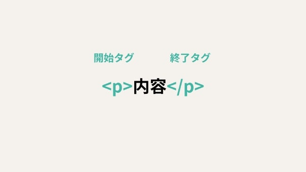
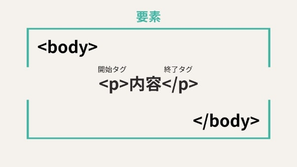

第1回のまとめ
・gitについて
gitとは？
gitとはソースコードや変更履歴を管理するために使われる、代表的な分散型バージョン管理システムです。
gitによってファイルのバージョンを管理できるので、仮に他の誰かにソースコードが上書きされても、簡単に元に戻すことができます。
そのため作業者は、安心してソースコードの更新作業を行えるわけです。
gitを使う際に重要な基本用語
リポジトリ・・・ファイルや変更履歴を保存しておくデータベース。
ローカルにある「ローカルリポジトリ」と、ネットワーク上の「ネットワークリポジトリ」がある。
ユーザーがローカル環境でソースコードの編集などを行う際は、ローカルリポジトリを使う。
一方リモートリポジトリは、他ユーザーとファイル・変更履歴を共有する際に利用する。
コミット・・・ファイルや変更履歴をリポジトリへ登録すること
プッシュ・・・コミットを、ローカルリポジトリからリモートリポジトリへ反映させること。
プッシュを行うことで、ローカルリポジトリ上のファイルや変更履歴が、リモートリポジトリへアップロードされる。
プル・・・リモートリポジトリのコミットを、ローカルリポジトリへ反映させること。
プルを行うことで、リモートリポジトリ上のファイルや変更履歴が、ローカルリポジトリへダウンロードされる。

詳しくはこちら
参考文献
（【入門】Gitとは？できることや使い方、GitHubとの違いをわかりやすく解説）
【入門】Gitとは？
・htmlについて
htmlとは？
htmlとは「ハイパーテキスト・マークアップ・ランゲージ（Hyper Text Markup Language）の略で、webページを作成するためのマークアップ言語です。
また、マークアップ言語とはWebページ内のテキスト情報の構成（タイトル・段落など）や役割をコンピュータが構造的に理解できるようにするための言語を意味します。
つまり人間がテキスト情報を目にした際に段落やタイトル、太字を識別できるのと同じように、コンピュータはHTMLをはじめとしたマークアップ言語を介してテキスト情報を識別しているのです。
htmlの基本用語
タグ・・・表示形式と範囲を指定する

要素・・・タグとテキスト情報を合わせたページの上の部分

属性・・・タグに性質を与える
詳しくはこちら
参考文献
（HTMLとは？初心者向けに基礎知識を分かりやすく解説）
HTMLとは？